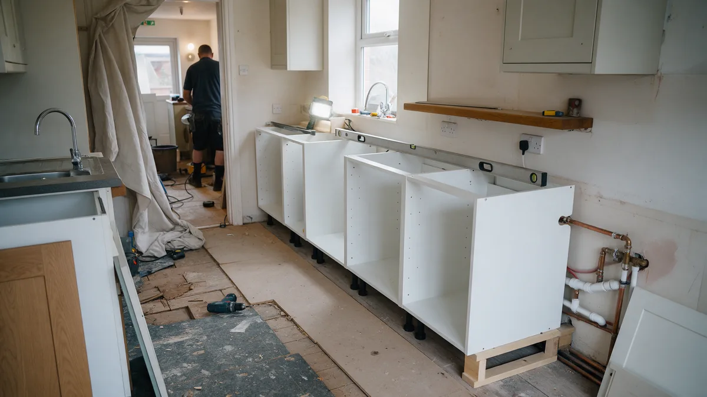

Advice · Sample article
What happens on each day of a kitchen fit
A week of your house in bits is easier when you know what each day looks like. This is the usual order.

Generated photoLiving through a kitchen fit is easier when you know the shape of it. The order below is how most jobs run in an ordinary house. The days move about a bit depending on the kitchen and what turns up behind the old one, but the sequence rarely changes, because each step needs the one before it.
- Day one: the old kitchen comes outDust sheets down the route through the house, water and power isolated where they need to be, then the old units, worktops and flooring out. By the end of the day the room is back to walls and floor, and we can see what we are actually working with.
- Day two: making goodPlastering patches, a soft floorboard replaced, the floor levelled where the new run needs it, and the first fix for any plumbing or wiring that is moving. This is the day nothing looks like progress and the most important things happen.
- Day three: base units inThe run set out from a level line, units levelled on their legs one at a time, scribed to the wall where it bows, and joined together so the whole run moves as one piece. Get this day right and the rest of the kitchen falls into place.
- Day four: wall units and tall unitsWall cupboards hung off a level batten, tall units plumbed and fixed, and the appliance housings checked against the actual appliances before anything is fixed shut.
- Day five: worktopsLaminate or wood cut, jointed and fitted, with the cut outs made for the sink and the appliances. If it is stone, this is the day it gets templated instead, and the stone itself comes a week or so later.
- Day six: sink, taps and appliancesThe sink and taps plumbed in with isolating valves, the dishwasher and washer connected, appliances set in and levelled, and the electrician in to connect anything that needs connecting.
- Day seven: doors, drawers and handlesDoors hung and adjusted until the gaps are even along the run, drawer fronts set, handles on, plinths cut round the legs and cornice fitted if there is any. The room suddenly looks like a kitchen.
- Day eight: flooring and finishingFloor laid if it is going in after the units, silicone run along the worktop joints and round the sink, beading and trims, touching in, and everything run and tested properly.
- Day nine: handover and the snag listWe walk round it with you and you tell us what is not right. A door that needs a half turn, a drawer that catches, a mark on a panel. That list gets done rather than promised.
What you can do to make it quicker
- Empty the kitchen completely before day one, including the cupboard everybody forgets above the fridge.
- Set up a kettle, a microwave and a washing up bowl somewhere else in the house. A week of that is fine if it is planned, and miserable if it is not.
- Have everything on site and checked before the start date. One missing end panel can hold up a whole day.
- Decide the small things early: handles, the bin, where the sockets go. Decisions made on the morning are the ones people regret.
- Keep pets and small children out of the room while tools are about, which sounds obvious and is the thing most likely to slow a day down.
What usually causes the delays
In order: appliances or units that turn up wrong or late, something behind the old kitchen that has to be fixed first, and stone worktops, which simply take the time they take. None of those are a reason to panic. They are a reason to ask, on day one, what the plan is if any of them happen.
Written for this demo as general guidance. It is not advice on your kitchen, and products and rules change. Check anything that matters with somebody who has seen the room.
More advice
Also worth a read
Refresh or replace: when new doors are enough
Half the kitchens we are asked to replace do not need replacing. Here is how to tell which half yours is in.
Read it →Planning a kitchen layout that works
Most of the regret we hear about is layout, not doors. Four things decide whether a kitchen works.
Read it →Ready to get the room measured?
Tell us what you are planning and we will come and measure it up properly.